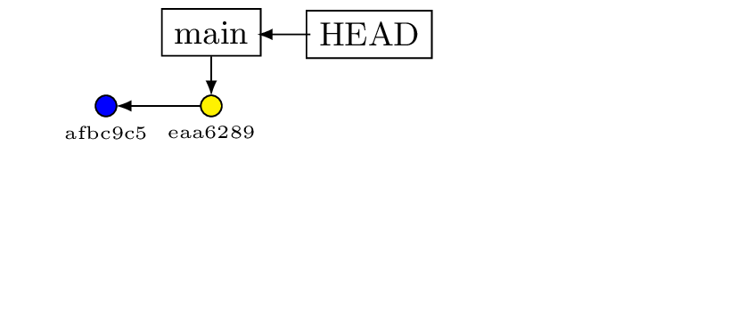
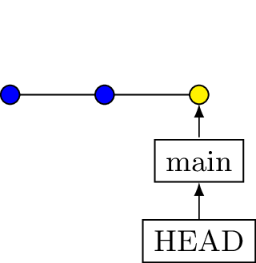
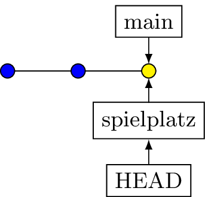
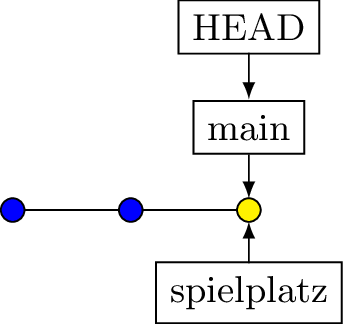
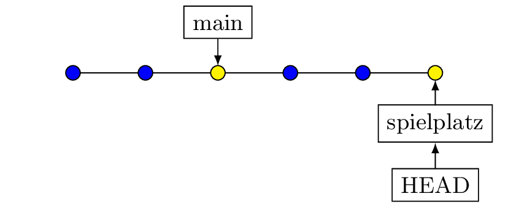
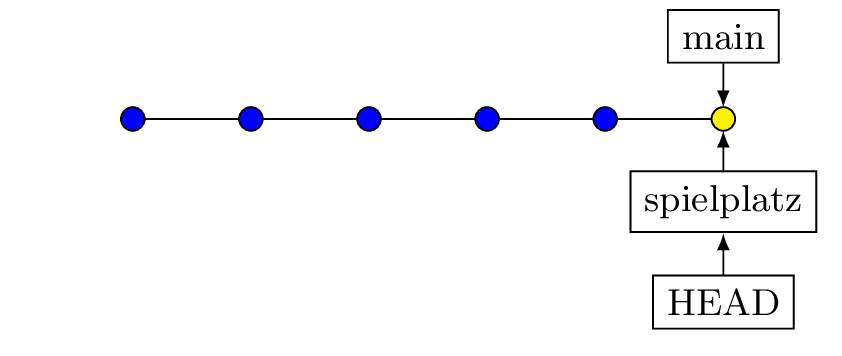
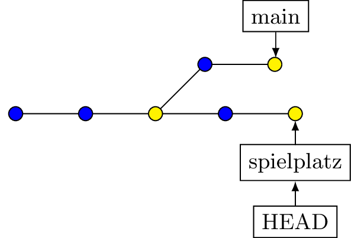
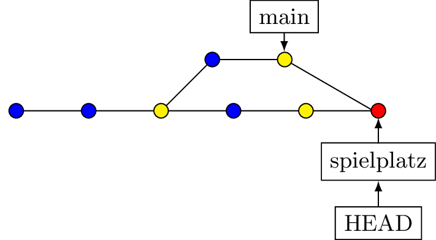
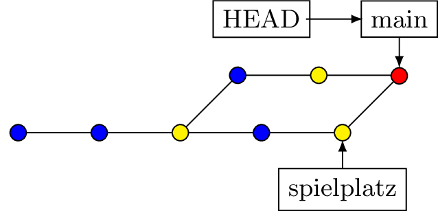

Unsere Themen:
Zum Lernen: Kommandozeile git-Bash
Später Client nach Wahl
[Einzig wichtige Stellen]{smaller}
Festlegen des Editors
Noch was
Übungsblatt
Inhalt erstellen
Datei aufnehmen
Datei versionieren
Erweitern der Datei
Was ist passiert?

Git arbeitet dateibasiert und ignoriert leere Ordner.
Anlegen des Repos versuch_1
Kontrolle
Check
git log
# Ausgabe
commit 6db4f3383512a7f3aaaf3b050334d7fd2c474688 (HEAD -> main)
Author: Wolfgang <hoeferwolf@t-online.de>
Date:
Thu Nov 13 10:46:50 2025 +0100
Erläuterung
commit 430149c83906005ae2c53c8eaf9ce230e3456ad0
Author: Wolfgang <hoeferwolf@t-online.de>
Date:
Thu Nov 13 10:46:50 2025 +0100
Erste Datei erstelltKontrolle
Ausgabe
Auf Branch main xx
Änderungen, die nicht zum Commit vorgemerkt sind:
(benutzen Sie "git add <Datei>...", um die Änderungen zum Commit vorzumerken)
(benutzen Sie "git restore <Datei>...", um die Änderungen im Arbeitsverzeichnis zu verwerfen)
geändert: datei1.txt
Unversionierte Dateien: (benutzen Sie "git add <Datei>...", um die Änderungen zum Commit vorzumerken)
datei2.txt
keine Änderungen zum Commit vorgemerkt (benutzen Sie "git add" und/oder "git commit -a")Versionieren
Weitere Zeilen
Ausgabe
Commit des aktuellen Stands
git Status
# Ausgabe
Auf Branch main
Änderungen, die nicht zum Commit vorgemerkt sind:(benutzen Sie "git add <Datei>...", um die Änderungen zum Commitvorzumerken)
(benutzen Sie "git restore <Datei>...", um die Änderungen im Arbeitsverzeichnis zu verwerfen)
geändert: datei1.txt
geändert: datei2.txt
keine Änderungen zum Commit vorgemerkt (benutzen Sie "git add" und/oder "git commit -a")Jetzt der Rest …
Vorbereitungen
Darstellen der Ordnerstruktur durch tree erfordert Nachinstallation!
c:\benutzer\name\bin erstellen.git
├── branches
├── config
├── description
├── HEAD
├── hooks
│ ├── applypatch-msg.sample
│ ├── commit-msg.sample
│ ├── fsmonitor-watchman.sample
│ ├── post-update.sample
│ ├── pre-applypatch.sample
│ ├── pre-commit.sample
│ ├── pre-merge-commit.sample
│ ├── prepare-commit-msg.sample
│ ├── pre-push.sample
│ ├── pre-rebase.sample
│ ├── pre-receive.sample
│ ├── push-to-checkout.sample
│ ├── sendemail-validate.sample
│ └── update.sample
├── info
│ └── exclude
├── objects
│ ├── info
│ └── pack
└── refs
├── heads
└── tagsund wieder tree .git
Neue Inhalte:
.git
├── branches
├── config
├── description
├── HEAD
├── hooks
│ ├── applypatch-msg.sample
│ ├── commit-msg.sample
│ ├── fsmonitor-watchman.sample
│ ├── post-update.sample
│ ├── pre-applypatch.sample
│ ├── pre-commit.sample
│ ├── pre-merge-commit.sample
│ ├── prepare-commit-msg.sample
│ ├── pre-push.sample
│ ├── pre-rebase.sample
│ ├── pre-receive.sample
│ ├── push-to-checkout.sample
│ ├── sendemail-validate.sample
│ └── update.sample
├── index <<< Nicht direkt lesbar
├── info
│ └── exclude
├── objects
│ ├── ce <<< Inhalt von homepage.html
│ │ └── 1332fcf1795166c3c5cd0216b5e7dc2dce7998
│ ├── info
│ └── pack
└── refs
├── heads
└── tagsNicht direkt lesbar
Datei index = Stage
Direktanzeige des Hashs der Datei:
Commiten der Hompage
Wieder tree .git
.git
├── branches
├── COMMIT_EDITMSG
├── config
├── description
├── HEAD
├── hooks
...
├── index
├── info
│ └── exclude
├── logs
│ ├── HEAD
│ └── refs
│ └── heads
│ └── main
├── objects
│ ├── 66
│ │ └── 732ba22bd6f2cedd2ddbe2b289a03ce033ef06
│ ├── 94
│ │ └── eed25c4ef6cfa1384df66f28308c09dc9bf28d
│ ├── ce
│ │ └── 1332fcf1795166c3c5cd0216b5e7dc2dce7998
│ ├── info
│ └── pack
└── refs
├── heads
│ └── main
└── tagsIn der Ausgabe von tree
Überprüfen des Verdachts … nur Bestätigung
Mehr Details
Der Commit verweist auf einen TREE (hier nur eine einzige Datei!)
Inhalt des Trees
blob = Inhalt von homepage.html
Der Blob enthält:
Zusammenfassung
(Abzweigungen bei der Entwicklung)
Erstellen eines Branchs
Erstellt einen Zeiger spielplatz auf den aktuellen Commit.
Davor

Danach

.git
├── branches
├── COMMIT_EDITMSG
├── config
├── description
├── HEAD
├── hooks
│ ├── applypatch-msg.sample
│ ├── commit-msg.sample
│ ├── fsmonitor-watchman.sample
│ ├── post-update.sample
│ ├── pre-applypatch.sample
│ ├── pre-commit.sample
│ ├── pre-merge-commit.sample
│ ├── prepare-commit-msg.sample
│ ├── pre-push.sample
│ ├── pre-rebase.sample
│ ├── pre-receive.sample
│ ├── push-to-checkout.sample
│ ├── sendemail-validate.sample
│ └── update.sample
├── index
├── info
│ └── exclude
├── logs
│ ├── HEAD
│ └── refs
│ └── heads
│ └── main
├── objects
│ ├── 23
│ │ └── bc85c5557f20ae6530d2ad0e66dd9d42ad225d
│ ├── 4d
│ │ └── 5819dc3711611c3e6a16b1ed362a6952e980fc
│ ├── b1
│ │ └── 367440191d3abc86bb46f955d140fec7eef42a
│ ├── info
│ └── pack
└── refs
├── heads
│ └── main
└── tagsMehr Inhalt
Branch spielplatz erstellen
Der Zeiger spielplatz erstellen, Zeiger HEAD positionieren
Zurück zu Branch main
Der Zeiger HEAD wechselt die Position zu main

Einfachster Fall
Nur Änderungen in Spielplatz …

Nur verschieben des Zeigers

Erstellen / Nacherstellen zweier „Kurzgeschichten“.
Repository I: Meine Vorlage
Repository II: Euer Buch
Der Entwicklungszyklus ist sehr exakt ausgearbeitet, um bestimmte Situationen zu erzeugen. Also wirklich jeden Schritt genau so machen, wie beschrieben!
(Vorlage-Ordner/Fenster)
(Buch-Ordner/Fenster)
Die erste Hälfte von Story 1 ist geschrieben.
Kurzer Blick in die Geschichte, um Orientierung zu bekommen:
Status prüfen
Ausgabe:
(Vorlage-Ordner/Fenster)
# Ausgabe
Auf Branch main
Noch keine Commits
Zum Commit vorgemerkte Änderungen:
(benutzen Sie "git rm --cached <Datei>..."
zum Entfernen aus der Staging-Area)
neue Datei: story1.md
Änderungen, die nicht zum Commit vorgemerkt sind:
(benutzen Sie "git add <Datei>...",
um die Änderungen zum Commit vorzumerken)
(benutzen Sie "git restore <Datei>...", um die Änderungen im
Arbeitsverzeichnis zu verwerfen)
geändert: story1.mdKurzer Blick in die Geschichte
Buch Fenster
Branch erstellen
Vorlage Fenster
Buch Fenster
Blick ins Buch
Buch Fenster
Beginnen mit Idee 1
Buch Fenster
Buch Fenster
Buch Fenster
Im Branch entwicklung_story_2:
„weiße Schildkröte“ wird zu „weise Schildkröte“
Nicht in einem Ideen-Branch ausführen!
Die Änderung erreicht die Ideen-Branches nicht!
Mergen von Branch Idee 1 auf Entwicklung
Ein FF-Merge ist nicht möglich.
Ein Merge-Commit ist nötig.
Weitere Änderung
Die Schildkröte soll eine Riesenschildkröte werden!
Änderung im Branch story2_idee_1 vornehmen.
Commiten der Version
git diff --color-words entwicklung_story_2..story2_idee_1
# Ausgabe
Freddy war nicht allein. Seine beste Freundin,
Shelly, die >>weise Schildkröte<<,**weiße Riesenschildkröte**,
lebte ebenfalls am Teich. Shelly war für ihre ruhige und besonnene
Art bekannt, aber sie konnte auch sehr mutig sein,
wenn es darauf ankam.Merge von Idee auf Entwicklung
Meldung
Manuell korrigieren und wieder speichern
Aus dem Stage
Nach einem voreiligen add
Problem
Das geht mit jedem Commit, überschreibt aber immer die aktuelle Datei!
Rücksetzen auf frühere Stände – Varianten
Hard
Mixed (Quasi Standard)
Commits auschecken
Log betrachten
Auschecken von Commit 4
Log im Detail
Rücksprung
Verschiebt nur den Branchpointer
(3 Way Merge)
Änderungen in beiden Branches werden
in einem Commit zusammengeführt.
Nicht alle Pointer werden versetzt!



Löschen eines Branches
Alternative zu Merge
Squash
Beispiel
Im Repository
Es folgt ein Merge.
Vorgehen
Im Prinzip wie bei der lokalen Arbeit.
Zwischenstände werden geteilt.
Wo wird gearbeitet?
(Selbst hosten)?
Ein Server-Repository wird angelegt durch
Dort werden von Benutzern keine Dateien erstellt!
Workflow
Regeln
Firmen definieren ihre eigenen Workflows.
Es gibt kein richtig sondern nur Regeln.
Branching wird zentrales Thema!
Clone
Haben wir bereits gemacht (ohne Zugriffsrechte!)
Jetzt kompletter Setup!
ssh
(secure shell - Verschlüsselter Remote Zugriff)
Mit SSH anmelden auf deinem Server
Falls abweichender Port:
Anlegen eines git Repos
Weitere Reihenfolge
Danach können andere mit dem Repository arbeiten.
Clonen
Bei abweichendem Port
Generelle Kontrolle
Vorsicht
Umbenennen
Readme anlegen
Warum das Umbenennen?
Einzelschritte beobachten mit Tree auf Server und Client
Aktueller Stand (Server)
Aktueller Stand (Server)
Aber kein Branch dieses Namens vorhanden!
Umbenennen (Server)
Inhalt von HEAD
Untersuchen mit tree
Auf der Client-Seite
Untersuchen
Aktueller Stand
Der Status zeigt
Manuelles Ändern des Eintrags in HEAD wirkt sich direkt aus!
PROBIEREN
Branch auf main umbenennen ändert nur Eintrag in HEAD
Daten erzeugen
Mit diesem Commit entsteht der eigentliche Branch:
DIESER Branch kommt auf den Server:
Fetch / Pull
Fetch holt die Änderungen des aktuellen Branchs ohne sie zu integrieren
Pull führt Fetch + Merge aus => Dateien in aktueller Version
Beispiel
Längeres Script im Material pull_fetch.sh
#!/bin/bash
########################
# Erstellt unterschiedliche Stände in einem
# Arbeits-Branch zur Demonstration von fetch
######################
IP=192.168.3.154
repo_erstellen(){
### Server-Seite
ssh benutzer@${IP} '
rm -rf team1.git
git init --bare team1.git
cd team1.git
git branch -m main
'
}
repo_clonen(){
### client-Seite
cd /tmp
rm -rf team1
rm -rf team2
git clone benutzer@${IP}:/home/benutzer/team1.git
cd team1
git branch -m main
}
content_in_main(){
for i in {1..5}
do
echo "Zeile $i" >> datei.txt
git add . && git commit -m "Step $i"
done
git push -u origin main
}
content_in_arbeit_1(){
### Branch umschalten
git switch -c arbeit
for i in {1..5}
do
echo "Arbeit - Zeile $i" >> datei.txt
git add . && git commit -m "Arbeit - Step $i"
done
git push -u origin arbeit
}
clonen_des_repo(){
cd /tmp
git clone benutzer@${IP}:/home/benutzer/team1.git team2
}
content_in_arbeit_2(){
cd /tmp/team1
for i in {6..10}
do
echo "Arbeit NEU - Zeile $i" >> datei.txt
git add . && git commit -m "Arbeit NEU - Step $i"
done
git push
}
###############
repo_erstellen # server
repo_clonen # client 1
content_in_main
content_in_arbeit_1 # + push
clonen_des_repo # client 2
content_in_arbeit_2 # Änderungen auf Client 1 + push
#### ab hier: Was ist auf Client 2
# cd /tmp/team2
# git log
# git switch arbeit
# git log
# git fetch
# git diff arbeit origin/arbeit
# git log HEAD..origin/arbeit
# git show <HASH>
# git merge
Strategie
Die KI sagt
Max und Susi arbeiten an einem gemeinsamen Projekt …
ToDo (Übung)
Susi und Max clonen das Repository
Status-Check von Susi (Max analog)
Susi erstellt einen Commit
Kontrolle
Push durch Susi
Git kommentiert das:
Objekte aufzählen: 4, fertig.
Zähle Objekte: 100% (4/4), fertig.
Delta-Kompression verwendet bis zu 6 Threads.
Komprimiere Objekte: 100% (2/2), fertig.
Schreibe Objekte: 100% (3/3), 292 Bytes | 292.00 KiB/s, fertig.
Gesamt 3 (Delta 0), Wiederverwendet 0 (Delta 0),
Pack wiederverwendet 0
To /tmp/labor2/entfernt
d46681d..78db34e main -> mainStatus:
Max beginnt mit der Arbeit
Als Ausgabe bekommt er
remote: Objekte aufzählen: 4, fertig.
remote: Zähle Objekte: 100% (4/4), fertig.
remote: Komprimiere Objekte: 100% (2/2), fertig.
remote: Gesamt 3 (Delta 0), Wiederverwendet 0 (Delta 0),
Pack wiederverwendet 0
Entpacke Objekte: 100% (3/3), 272 Bytes | 272.00 KiB/s, fertig.
Von /tmp/labor2/entfernt
d46681d..78db34e main -> origin/mainAktueller Status
Genauerer Blick
Max sieht den Commit, der noch nicht in seinen Branch integriert ist.
Sieht ok aus …
Die Hashes zeigen, was passiert:
Susi erstellt einen Commit
Max erstellt einen Commit (ohne voheriges pullen)
Max versucht einen Push
To 192.168.3.154:/home/benutzer/entfernt.git
! [rejected] main -> main (fetch first)
error: Fehler beim Versenden einiger Referenzen
nach '192.168.3.154:/home/benutzer/entfernt.git'
Hinweis: Updates were rejected because the remote contains work
Hinweis: that you do not have locally. This is usually caused
Hinweis: by another repository pushing to the same ref.
Hinweis: If you want to integrate the remote changes, use
Hinweis: 'git pull' before pushing again.
Hinweis: See the 'Note about fast-forwards' in 'git push --help'
Hinweis: for details.Max holt die Änderungen im Repository
Er checkt die Unterschiede
Alles ok
Varianten
Vorüberlegungen
Vollwertiger Server
Docker
Für die Installation ssh-Verbindung nötig
Rückmeldung:
Bestätigen mit yes
Kennwort gitkurs (evtl. keine Anzeige am Bildschirm)
Anmelden als Benutzer benutzer auf dem Server:
Eintragen des Keys:
Abmelden und neu anmelden. Sollte jetzt ohne Kennwort klappen.
Individuelle Nutzer (=Schüler)
Im Prinzip muss der Schlüssel für jeden Benutzer eingetragen werden.
Individuelle Variante:
Je nach Einsatzzweck des Servers verschieden
Repository vorbereiten
Wegen exzessiver Nutzung ist mittlerweile ein Accout auf dockerhub.com erforderlich.
Dort muss in den Settings ein Access-Token erstellt werden.
Script
sudo -i
apt update
apt install apt-transport-https curl -y
curl -fsSL https://download.docker.com/linux/ubuntu/gpg
| gpg --dearmor -o /etc/apt/keyrings/docker.gpg
\
echo "deb [arch=$(dpkg --print-architecture) \
signed-by=/etc/apt/keyrings/docker.gpg] \
https://download.docker.com/linux/ubuntu \
$(. /etc/os-release && echo "$VERSION_CODENAME") \
stable" | tee /etc/apt/sources.list.d/docker.list > /dev/nullScript
apt update
apt install docker-ce docker-ce-cli \
containerd.io docker-buildx-plugin \
docker-compose-plugin -y
compose_url="https://github.com/docker/compose/releases/download"
curl -L $compose_url/1.28.5/docker-compose-`uname \
-s`-`uname -m` -o /usr/local/bin/docker-compose
chmod +x /usr/local/bin/docker-composeTest der Installation
Varianten
Erster Kontakt
-d = Als Hintergrunddienst-p 8090:80 = Die Software verwendet Port 80, ist aber über 8090 erreichbar--name = So taucht der Container in der Liste aufcorentinth/it-tools ImageErster Kontakt
Aufruf im Browser
… Spielen !
Was ist passiert
| Befehl | Wirkung |
|---|---|
| docker stop it-tools | Container stoppen |
| docker stop bd072e349cab | geht auch |
| docker start it-tools | Container starten |
| docker start bd072e349cab | geht auch |
| docker rm it-tools | Container entfernen – Image bleibt! |
| docker rmi “corentinth/it-tools” | Entfernt auch das Image |
Aufräumen
Image ist nur löschbar, wenn kein zugehöriger Container existiert.
Weitere Schritte
Einfaches Dockerfile
Container erstellen und starten
Einfaches Dockerfile (lighttpd.conf und index.html nötig!)
Container erstellen und starten
lighttpd.conf
Container erstellen und starten
index.html
Container erstellen und starten
Bonus
In den Kursmaterialien ist ein docker-Setup
mit Anleitung für einen git-Server, der
kennwortloses Arbeiten über http unterstützt!
Problem
Bei mehreren Containern, die zusammenarbeiten sind Abhängigkeiten schwer zu verwalten -> Docker compose
Docker compose
Weiteres Vorgehen
Neue Verbindung
docker-compose.yml bauen wir schrittweise auf.
Einrückungen mit Leerzeichen!
Gleicher Einrück-Level wie hostname
Einrückl-Level wie ports
Image erstellen
Erstkennwort ermitteln
Eine Datei mit speziellen Befehlen triggert nach einem Commit bestimmte Aktivitäten.
Problem
Geeignete kleine Beispiele finden.
Readme erstellen lassen
Neue Datei erstellen: .gitlab-ci.yml
Erstellen eines Buches
CI/CD
(Grober Ablauf)
Der Runner muss lokal installiert werden
(oder auf GitLab aktiviert)
Probleme
Lösung
Lokaler Runner
Docker ist dafür überdimensioniert
Lokales Dockerimage für Quarto